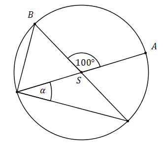

Matura 2015 kwiecień
Na tej stronie umieściłem kilka zadań treningowych
przed majową maturą 2015.
Liczba \(x\) stanowi \(16\%\) liczby \(y\). Zatem:
A.\( y=0{,}16x \)
B.\( y=6{,}25x \)
C.\( y=16x \)
D.\( y=25x \)
B
Reszta z dzielenia liczby \(45\) przez \(6\) jest miejscem zerowym funkcji
\(f(x)=(m+2)x+15\). Wtedy
A.\( m=-7 \)
B.\( m=-3 \)
C.\( m=0 \)
D.\( m=3 \)
A
Funkcja \(f\) określona jest wzorem \(f(x)=\sqrt{x+2\sqrt{6}}\). Wartość funkcji
\(f\) dla argumentu \(x=(\sqrt{3}-\sqrt{2})^2\) jest równa
A.\( \sqrt{2} \)
B.\( \sqrt{3} \)
C.\( \sqrt{5} \)
D.\( \sqrt{6} \)
C
Do wykresu funkcji \(f(x)=(m-1)x+m^2+1\) należy punkt \(P=(0,5)\). Parametr \(m\)
może być równy
A.\( 0 \)
B.\( 1 \)
C.\( 2 \)
D.\( \sqrt{6} \)
C
Układ równań \(\begin{cases} y=3x+2 \\ y=(m-2)x+5 \end{cases} \) nie ma rozwiązań,
gdy
A.\( m=2 \)
B.\( m=3 \)
C.\( m=4 \)
D.\( m=5 \)
D
Liczba \(\frac{\sqrt{8}}{\sqrt[3]{16}}\) jest równa
A.\( \sqrt[3]{2} \)
B.\( \sqrt[4]{2} \)
C.\( \sqrt[5]{2} \)
D.\( \sqrt[6]{2} \)
D
Liczba \(0{,}(70)\) jest równa liczbie
A.\( \frac{7}{10} \)
B.\( \frac{70}{99} \)
C.\( \frac{7}{9} \)
D.\( \frac{77}{99} \)
B
Liczba \(2\log 5 +\log 4\) jest równa
A.\( 2 \)
B.\( 2\log 20 \)
C.\( \log 40 \)
D.\( 10 \)
A
Wskaż równanie prostej, która jest równoległa do prostej o równanie \(12x+4y+3=0\)
A.\( y=12x \)
B.\( y=-12x \)
C.\( y=3x \)
D.\( y=-3x \)
D
Kąt \(ASB\) jest kątem środkowym w okręgu i jego miara wynosi \(100^\circ \). Miara
zaznaczonego kąta \(\alpha \) jest równa 
A.\( 40^\circ \)
B.\( 45^\circ \)
C.\( 50^\circ \)
D.\( 60^\circ \)
A
Długości przyprostokątnych trójkąta prostokątnego są równe \(4\) i \(6\). Środkowa
tego trójkąta poprowadzona z wierzchołka kąta prostego ma długość
A.\( \sqrt{13} \)
B.\( \sqrt{52} \)
C.\( 5 \)
D.\( 2 \)
A
Liczby \(1, 5, 501\) są odpowiednio pierwszym, drugim i ostatnim wyrazem
skończonego ciągu arytmetycznego. Ile wyrazów ma ten ciąg?
A.\( 499 \)
B.\( 126 \)
C.\( 125 \)
D.\( 101 \)
B
Prostokąt o bokach długości \(2\) i \(4\) obracamy wokół krótszego boku. Ile wynosi
pole powierzchni całkowitej tak otrzymanej bryły?
A.\( 16\pi \)
B.\( 24\pi \)
C.\( 32\pi \)
D.\( 48\pi \)
D
Suma pierwiastków równania \(17(x-1)(2-x)=0\) jest miejscem zerowym funkcji
\(f(x)=(m-1)x-6\). Wtedy
A.\( m=0 \)
B.\( m=1 \)
C.\( m=2 \)
D.\( m=3 \)
D
W układzie współrzędnych zaznaczono kąt \(\alpha \).  Jedno z ramion kąta \(\alpha \)
przechodzi przez punkt \(P=(-4,3)\). Wtedy:
Jedno z ramion kąta \(\alpha \)
przechodzi przez punkt \(P=(-4,3)\). Wtedy:
Jedno z ramion kąta \(\alpha \)
przechodzi przez punkt \(P=(-4,3)\). Wtedy: A.\( \cos \alpha = \frac{4}{5} \)
B.\( \cos \alpha = -\frac{4}{5} \)
C.\( \cos \alpha = -\frac{4}{3} \)
D.\( \cos \alpha = -\frac{3}{4} \)
B
Do wykresu funkcji \(f(x)=\frac{a}{x-3}\) należy punkt \(A=(1,2)\). Wobec tego:
A.\( a=-4 \)
B.\( a=-3 \)
C.\( a=-2 \)
D.\( a=-1 \)
A
Najmniejsza wartość funkcji \(f(x)=x^2-3x+1\) w przedziale \(\langle -1,3\rangle \)
jest równa
A.\( 5 \)
B.\( \frac{3}{2} \)
C.\( 1 \)
D.\( -\frac{5}{4} \)
D
Dany jest ciąg geometryczny \((a_n)\), w którym pierwszy wyraz jest równy \(6\), a
czwarty \(12\sqrt{2}\). Liczba \(\sqrt[3]{a_3-4}\) jest równa
A.\( \sqrt[3]{2} \)
B.\( \sqrt{2} \)
C.\( 2 \)
D.\( 2\sqrt{2} \)
C
Dane są punkty \(A=(1,2)\) oraz \(B=(3,1)\). Punkt \(M=(p,q)\) jest środkiem
odcinka \(AB\). Liczby \(p, 2q, x\) tworzą w podanej kolejności ciąg arytmetyczny. Wówczas:
A.\( x=1 \)
B.\( x=2 \)
C.\( x=3 \)
D.\( x=4 \)
D
Rzucamy \(3\) razy symetryczną, sześcienną kostką do gry. Jakie jest
prawdopodobieństwo, że w każdym rzucie wypadnie mniej niż pięć oczek?
A.\( \frac{3}{5} \)
B.\( \frac{8}{125} \)
C.\( \frac{8}{27} \)
D.\( \frac{27}{125} \)
C
Ciąg \((a_n)\) jest geometryczny oraz \(a_1=2\), \(a_2=6\). Liczby \(a_3, x,
\frac{x}{2}\) w podanej kolejności tworzą ciąg arytmetyczny. Oblicz \(x\).
\(x=12\)
W kulę o promieniu \(5\) wpisano stożek o kącie rozwarcia \(90^\circ \). Oblicz
pole powierzchni całkowitej stożka.
\(P=25\pi (1+\sqrt{2})\)
Znajdź wszystkie argumenty \(x\) dla których funkcje \(f(x)=x-3\) oraz \(g(x)=-\frac{2}{x}\)
przyjmują tę samą wartość.
\(x=1\) lub \(x=2\)
Sześcian o krawędzi \(6\) przecięto płaszczyzną zawierającą przekątną dolnej
podstawy i jeden wierzchołek drugiej (patrz rysunek). Oblicz pole otrzymanego przekroju. 
\(P=18\sqrt{3}\)
Wyznacz równanie prostej przechodzącej punkt \(P=(-3,5)\) i nachylonej do osi
\(OX\) pod kątem \(30^\circ \).
\(y=\frac{\sqrt{3}}{3}x+5+\sqrt{3}\)
Wyznacz równanie prostej przechodzącej punkt \(P=(-3,5)\) i nachylonej do osi
\(OX\) pod kątem \(135^\circ \).
\(y=-x+2\)
Wyznacz wszystkie parametry \(m\) dla których proste \(y=(m^2+1)x-3\) oraz
\(y=-\frac{1}{3}x+2m\) są prostopadłe.
\(m=\sqrt{2}\) lub \(m=-\sqrt{2}\)